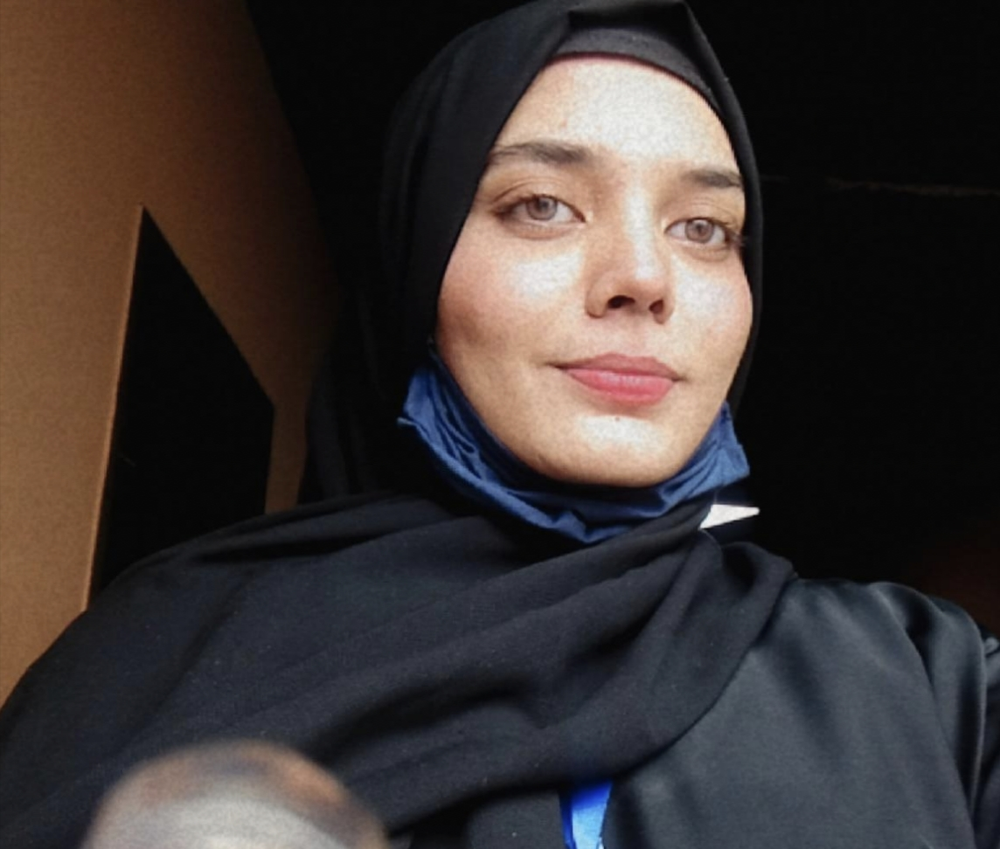

RIMSHA KHAN

EDUCATION
UNIVERSITY OF MANAGEMENT AND TECHNOLOGY
- Bachelors of Science in Computer Science
- CGPA: 3.2
UNIQUE GROUP OF COLLEGES
- FSC Pre-Engineering
- Marks : 956/1100
- Percentage : 86%
WORK EXPERIENCE
- Intership as Web developer
Worked as an web developer with The Spark Foundation(Singapore). From
August 2024-September 2024. Worked on different projects including
frontend and backend.
TECHNICAL SKILLS
- LANGUAGES:
- C++
- Java
- Python
- SQL
- HTML
- X86 Assembly Language
PROFESSIONAL SOFTWARES
Visual Studio Code, Codeblocks, Pycharm, Clion, Webstorm, Mysql
workbench, Microsoft Office, Dosbox,Cisco Packet Tracer, Google Colab
SKILLS
- Web Developing
- Problem Solving
- Computer Programming
PERSONAL SKILLS
- Organized
- Time management
- Team work
ACADEMIC PROJECTS
- Heart Beat Sensor using Arduino.
-
Learning management System School management system using relational
schema and ERD diagram.
-
A personal website which included a persons information, interests and
skills portfolio and achievements which uses HTML, CSS and Javascript
concepts including bootstrap too.